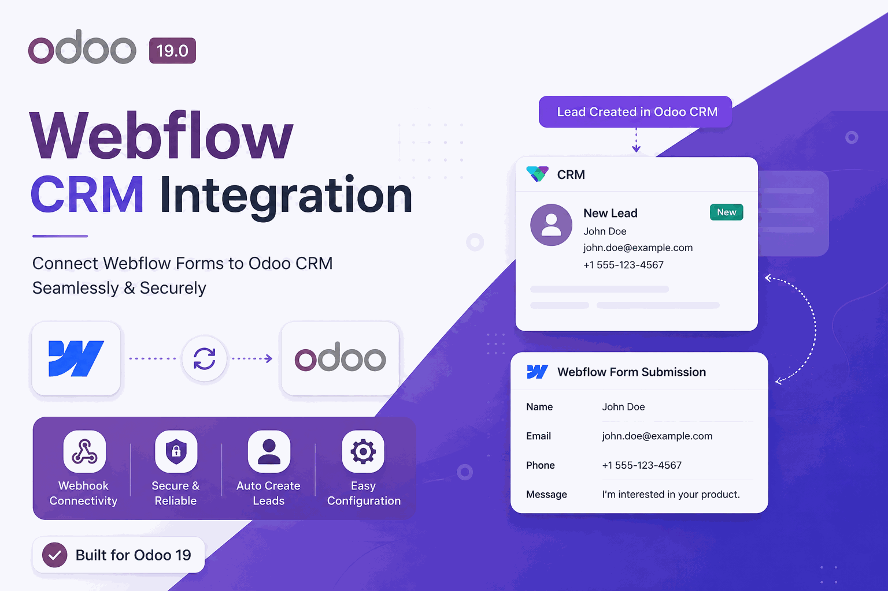

Connect your Webflow Forms to Odoo CRM through secure webhooks. Every submission creates or updates a CRM Lead in real time, with custom field mapping, duplicate detection, full logging and a health dashboard. Compatible with Odoo 18 and Odoo 19.
A public endpoint (POST /webflow/webhook) receives every form
submission and instantly creates or updates a CRM lead.
Shared-secret validation, optional HMAC-SHA256 signature checks, per-IP rate limiting and full request logging.
Map any Webflow field to any Odoo CRM field from the UI. Keys are matched case-insensitively, so labels just work.
Detect duplicates by email or phone with configurable Create / Update / Skip strategies.
Volume, success rate, today's leads, last sync time and overall health status at a glance.
Every request is logged with its payload, status and processing time. A scheduled action retries failed imports automatically.
Go to CRM → Configuration → Webflow Integration, toggle it on and paste your Webflow API token and Site ID.
Copy the auto-generated Webhook URL and secret into Webflow's form webhook (or use the guided Connection Wizard).
Publish your Webflow site, submit a form and watch the lead land in Odoo CRM with full logs.
| Webflow Field | Odoo CRM Field |
|---|---|
| Contact Name | Contact Name |
| Contact Email | |
| Contact Number | Phone |
| Company Name | Company Name |
| Subject | Opportunity (name) |
| Contact Message | Description |
| Service Type | Tags |
| Budget | Expected Revenue |
| Country | Country |
| Page URL | Source Page URL |
| UTM Source / Medium / Campaign | UTM Source / Medium / Campaign |
All mappings are editable in the UI to match your own form's labels.
Depends on the standard Odoo modules CRM, Mail and UTM only — no external services required beyond your Webflow account. Licensed under LGPL-3.
✔ Runs on Odoo Online (SaaS), Odoo.sh and On-Premise — no external Python dependencies, no server-level access required.
Published by Utsho Joy · utshojoy.netlify.app